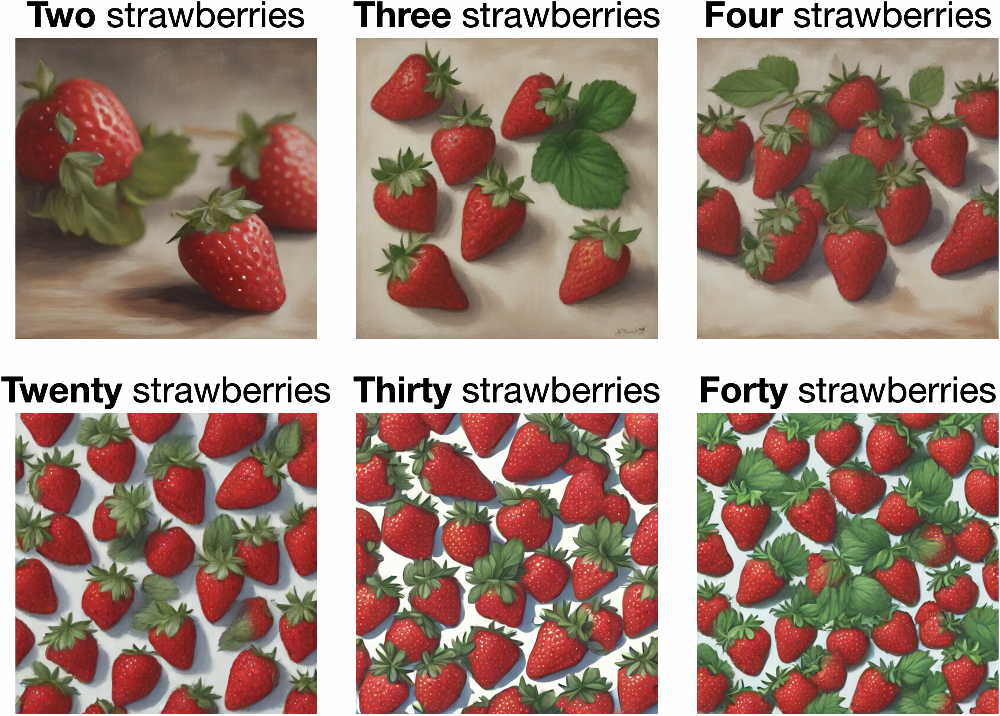
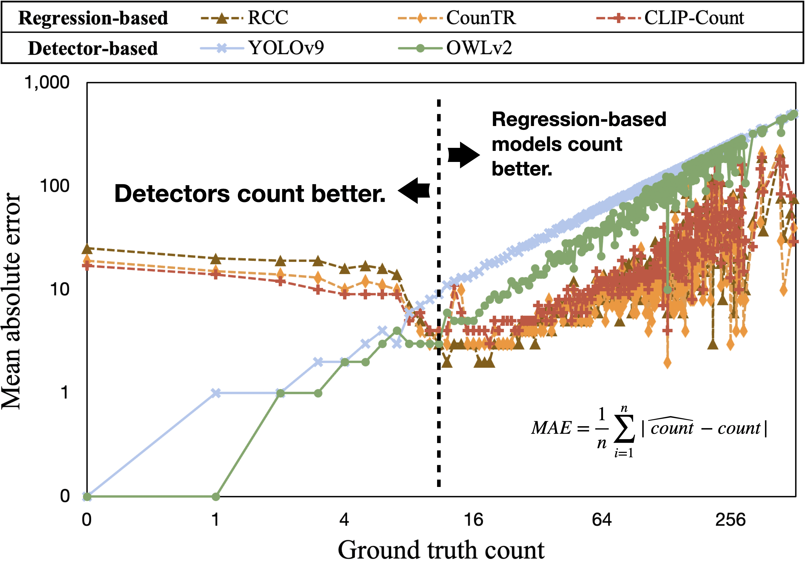
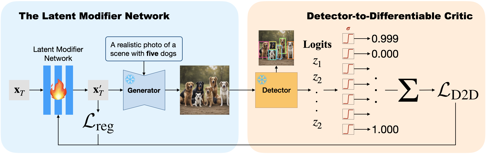
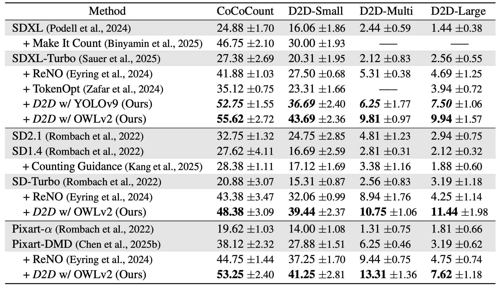
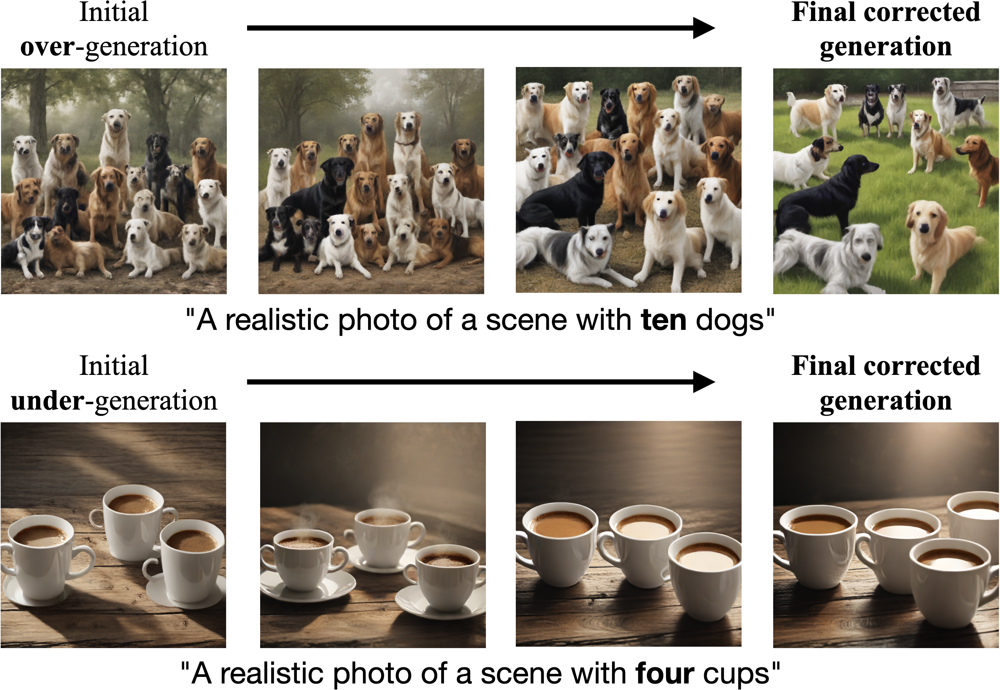
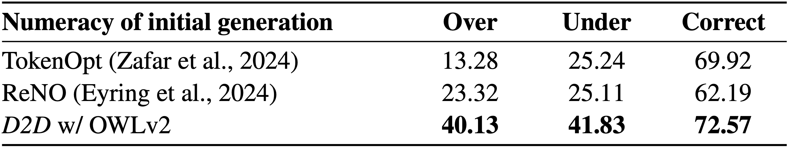
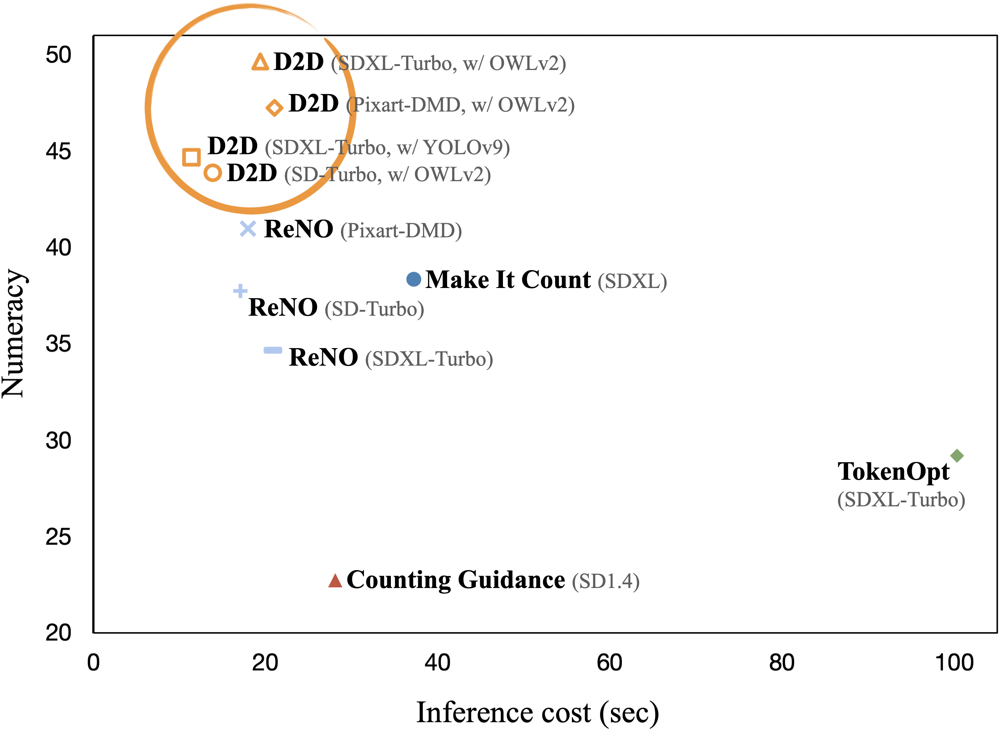
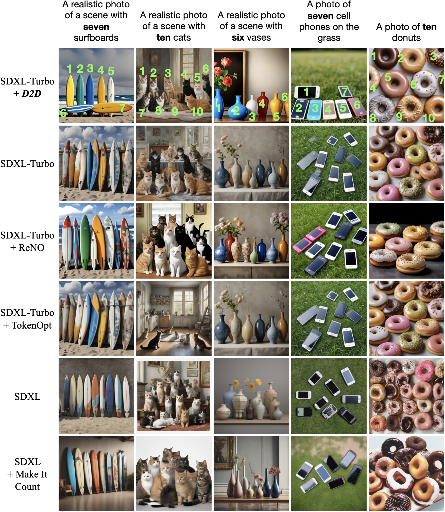

Low and high-density examples with the wrong number of generated objects.
Text-to-image (T2I) diffusion models have achieved strong performance in semantic alignment, yet they still struggle with generating the correct number of objects specified in prompts.
Existing approaches typically incorporate auxiliary counting networks as external critics to enhance numeracy. However, since these critics must provide gradient guidance during generation, they are restricted to regression-based models that are inherently differentiable, thus excluding detector-based models with superior counting ability, whose count-via-enumeration nature is non-differentiable. To overcome this limitation, we propose Detector-to-Differentiable (D2D), a novel framework that transforms non-differentiable detection models into differentiable critics, thereby leveraging their superior counting ability to guide numeracy generation. Specifically, we design custom activation functions to convert detector logits into soft binary indicators, which are then used to optimize the noise prior at inference time with pre-trained T2I models.
Our extensive experiments on SDXL-Turbo, SD-Turbo, and Pixart-DMD across four benchmarks of varying complexity (low-density, high-density, and multi-object scenarios) demonstrate consistent and substantial improvements in object counting accuracy (e.g., boosting up to 13.7% on D2D-Small, a 400-prompt, low-density benchmark), with minimal degradation in overall image quality and computational overhead.

Low and high-density examples with the wrong number of generated objects.

Error by ground truth count on TallyQA and FSC147 counting benchmarks.






@article{yoo2025d2d,
author = {Yoo, Nobline and Russakovsky, Olga and Zhu, Ye},
title = {D2D: Detector-to-Differentiable Critic for Improved Numeracy in Text-to-Image Generation},
journal = {arXiv preprint arXiv:2510.19278},
year = {2025}
}